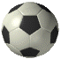
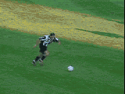
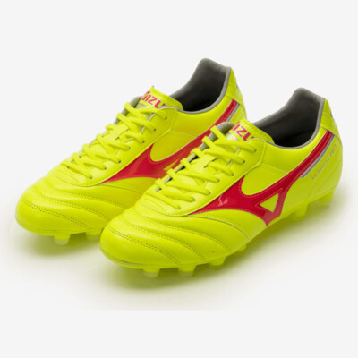
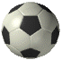
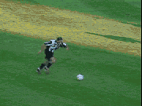
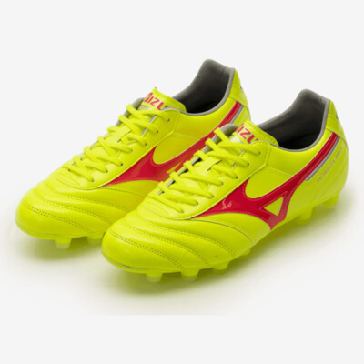

SOCCER:
I've been playing soccer for multiple years, and by far the best feeling is slide tackling someone or making the perfect pass/through ball. I play defense, (which is the most overlooked position), because we do everything and get very little credit.
 





My Top 5 Favorite Soccer Teams
- FC Barcelona
- Aston Villa
- New York Red Bulls
- Manchester United
- Liverpool F.C.